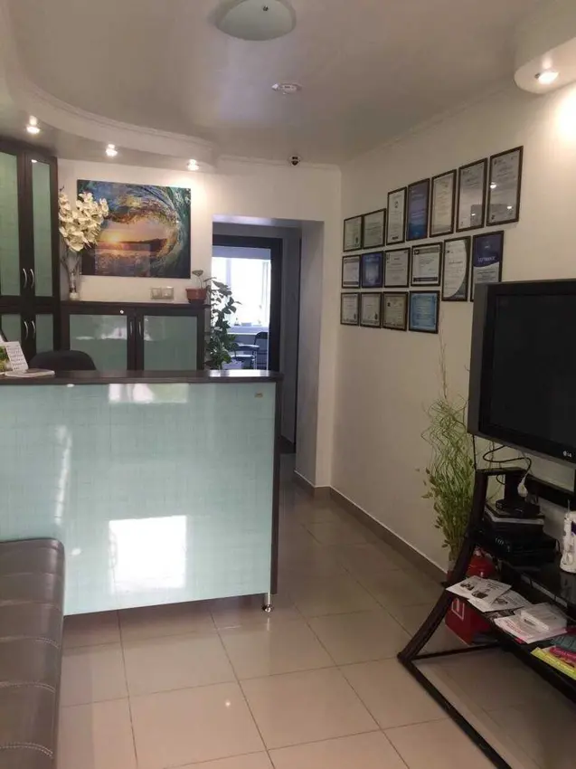
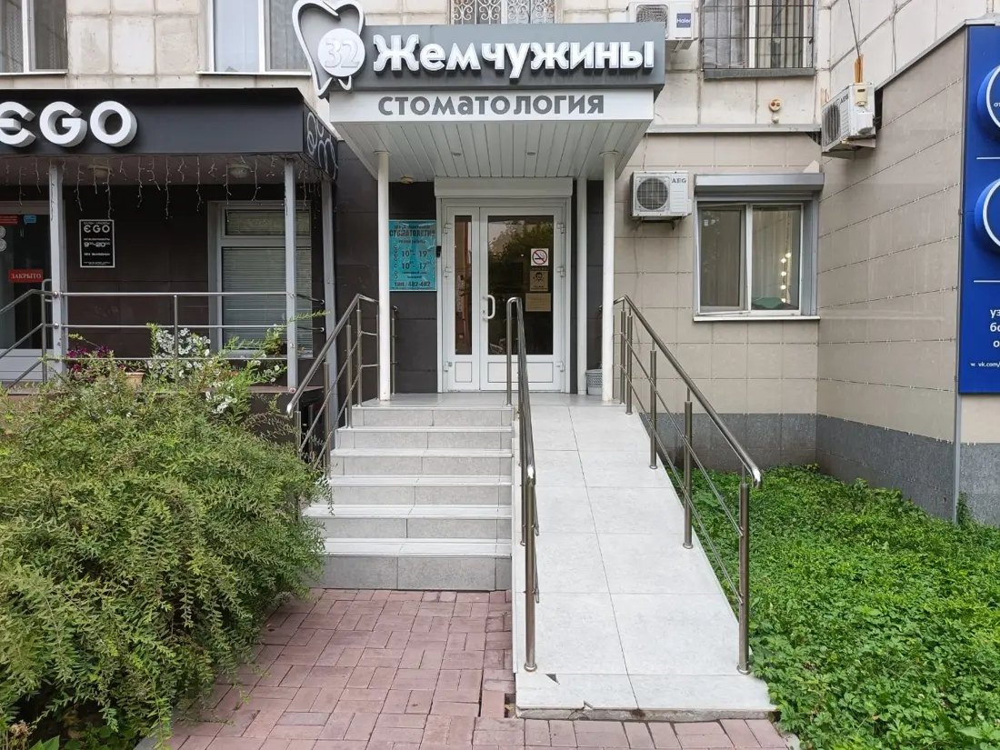

Искусство
сохранять
улыбку.
Стоматология, где здоровье, точность и эстетика становятся частью одного решения. Познакомьтесь с направлениями лечения и обсудите их с врачом.
в карточке клиники
12 оценок
авторская стоматология
Ваше здоровье.
Ваши решения.
Выберите интересующее направление и откройте подробности. Перечень направлений соответствует карточке Яндекс Карт.
Ничего не найдено. Попробуйте другой запрос.
Конкретные процедуры, цены и показания согласуются с врачом. Иллюстрации услуг — условные схемы, не фотографии работ клиники.

Внимание
к каждой детали.
«32 Жемчужины» — авторская стоматология в Тюмени на улице Холодильной. В карточке указаны терапия, хирургия, ортодонтия, протезирование, эстетическое направление и рентгенография.
Начните с консультации: специалист поможет определиться с обследованием и планом лечения.
Уточнить время приёма ↗Познакомьтесь с клиникой.
Оригинальные фотографии из карточки заведения. Нажмите для полноэкранного просмотра.
Отзывы на Яндексе.
Ниже приведены краткие пересказы всех доступных отзывов из карточки Яндекса, включая критические. Оценки отдельных авторов не реконструируются. Это личные мнения, не гарантия результата лечения.
Перед визитом.
Как записаться на приём?
Свяжитесь с клиникой по телефону +7 (3452) 40-24-82 и уточните доступное время.
Сколько стоит лечение?
Актуальный прайс не подтверждён. Состав лечения и стоимость уточняются после консультации.
Что показывает 3D-модель?
Условное строение системы импланта с коронкой, абатментом и костной тканью. Модель иллюстрирует принцип, а не подтверждает наличие конкретного метода в клинике.
Где находится стоматология?
Тюмень, улица Холодильная, 136, первый этаж. В карточке указан пандус, доступность помещения для коляски не подтверждена.
Начните с консультации.
Тюмень, ул. Холодильная, 136 · этаж 1+7 (3452) 40-24-82График работы уточняйте по телефону. Электронная почта не подтверждена.
Источник: карточка Яндекс Карт, проверка 26.11.2026.
